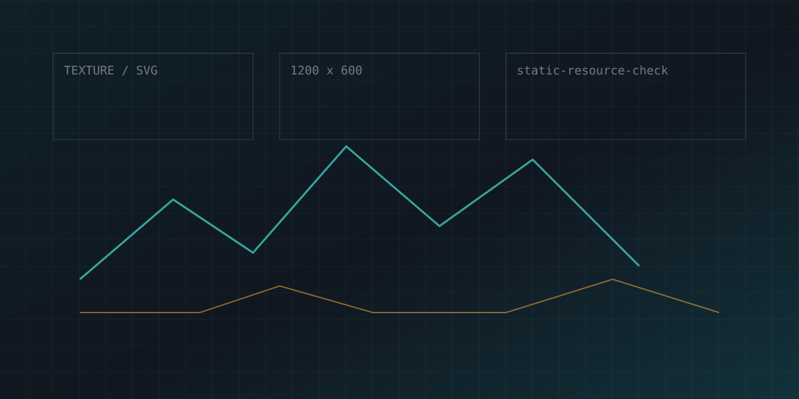

静态资源页
A 套 · 验证 Nginx 对静态资源的处理（加载耗时 / gzip / 缓存）
读取中…
SVG 图片资源

assets/纹理.svg
Canvas 动画
requestAnimationFrame 运行中
CSS 渲染
渐变 / 伪元素 / hover 过渡
资源加载明细
传输大小为 0 说明命中了本地缓存（第二次刷新会更明显）
资源
耗时
传输
解压后
缓存
类型
正在读取 performance 数据…
本页响应的头信息
这组值直接反映 Nginx 有没有开 gzip、缓存多久
Content-Encoding
—
gzip 是否生效
Cache-Control
—
静态资源缓存策略
Content-Length
—
线上传输字节
Server
—
响应方
…
正在检测。
重新测量
复制诊断报告